KONARK TEMPLE
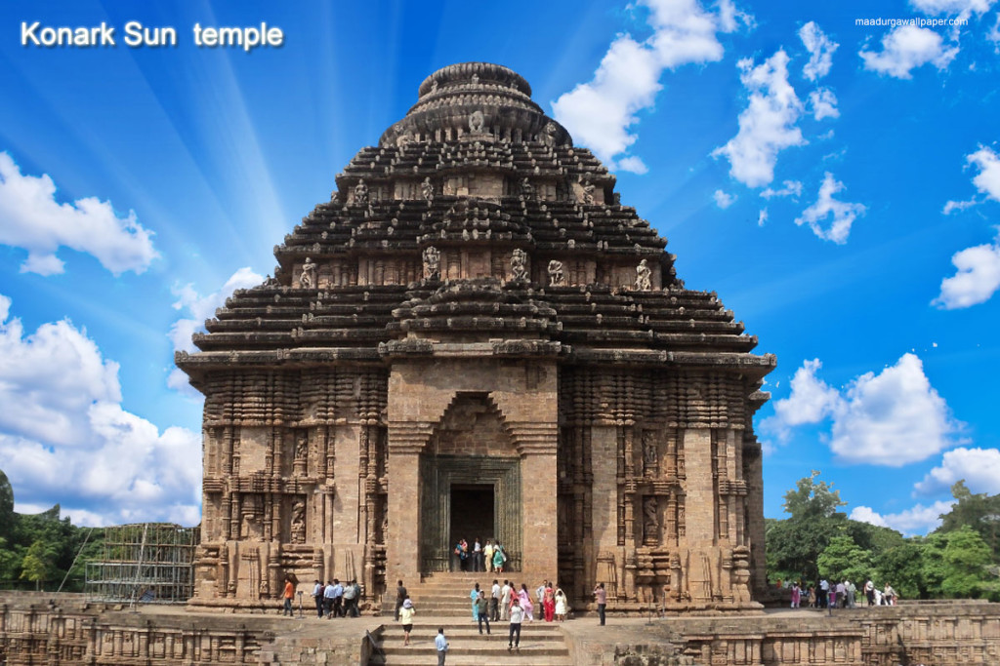Built by the great ruler of the Ganga dynasty – King Narasimhadeva I, along with 1200 artisans, the Konark Temple is magic set in stone. Located on the coast of the Bay of Bengal, this temple signifies the exquisite detailing of ancient architecture and is one of the famous historical places in India. A particularly interesting feat is at the entrance of the temple where two lions are shown crushing elephants and a human body lies at the foot of the elephant.
Konark Sun Temple is a 13th-century CE sun temple at Konark about 35 kilometres (22 mi) northeast from Puri on the coastline of Odisha, India. The temple is attributed to king Narasimhadeva I of the Eastern Ganga Dynasty about 1250 CE.
Dedicated to the Hindu god Surya, what remains of the temple complex has the appearance of a 100-foot (30 m) high chariot with immense wheels and horses, all carved from stone. Once over 200 feet (61 m) high, much of the temple is now in ruins, in particular the large shikara tower over the sanctuary; at one time this rose much higher than the mandapa that remains. The structures and elements that have survived are famed for their intricate artwork, iconography, and themes, including erotic kama and mithuna scenes. Also called the Surya Devalaya, it is a classic illustration of the Odisha style of Hindu temple architecture.
The cause of the destruction of the Konark temple is unclear and remains a source of controversy. Theories range from natural damage to deliberate destruction of the temple in the course of being sacked several times by Muslim armies between the 15th and 17th centuries. This temple was called the "Black Pagoda" in European sailor accounts as early as 1676 because its great tower appeared black. Similarly, the Jagannath Temple in Puri was called the "White Pagoda". Both temples served as important landmarks for sailors in the Bay of Bengal. The temple that exists today was partially restored by the conservation efforts of British India-era archaeological teams. Declared a UNESCO world heritage site in 1984, it remains a major pilgrimage site for Hindus, who gather here every year for the Chandrabhaga Mela around the month of February.
Description
The Konark Sun Temple was built from stone in the form of a giant ornamented chariot dedicated to the Sun god, Surya. In Hindu Vedic iconography Surya is represented as rising in the east and traveling rapidly across the sky in a chariot drawn by seven horses. He is described typically as a resplendent standing person holding a lotus flower in both his hands, riding the chariot marshaled by the charioteer Aruna. The seven horses are named after the seven meters of Sanskrit prosody: Gayatri, Brihati, Ushnih, Jagati, Trishtubha, Anushtubha, and Pankti. Typically seen flanking Surya are two females who represent the dawn goddesses, Usha and Pratyusha. The goddesses are shown to be shooting arrows, a symbol of their initiative in challenging darkness. The architecture is also symbolic, with the chariot's twelve pairs of wheels corresponding to the 12 months of the Hindu calendar, each month paired into two cycles (Shukla and Krishna).
The Konark temple presents this iconography on a grand scale. It has 24 elaborately carved stone wheels which are nearly 12 feet (3.7 m) in diameter and are pulled by a set of seven horses. When viewed from inland during the dawn and sunrise, the chariot-shaped temple appears to emerge from the depths of the blue sea carrying the sun.
The temple plan includes all the traditional elements of a Hindu temple set on a square plan. According to Kapila Vatsyayan, the ground plan, as well the layout of sculptures and reliefs, follow the square and circle geometry, forms found in Odisha temple design texts such as the Silpasarini. This mandala structure informs the plans of other Hindu temples in Odisha and elsewhere.
The main temple at Konark, locally called the deul, no longer exists. It was surrounded by subsidiary shrines containing niches depicting Hindu deities, particularly Surya in many of his aspects. The deul was built on a high terrace. The temple was originally a complex consisting of the main sanctuary, called the rekha deul, or bada deul (lit. big sanctum). In front of it was the bhadra deul (lit. small sanctum), or jagamohana (lit. assembly hall of the people) (called a mandapa in other parts of India.[20]). The attached platform was called the pida deul, which consisted of a square mandapa with a pyramidal roof. All of these structures were square at their core, and each was overlain with the pancharatha plan containing a variegated exterior. The central projection, called the raha, is more pronounced than the side projections, called kanika-paga, a style that aims for an interplay of sunlight and shade and adds to the visual appeal of the structure throughout the day. The design manual for this style is found in the Silpa Sastra of ancient Odisha.
History
Ancient Texts
The oldest surviving Vedic hymns, such as hymn 1.115 of the Rigveda, mention Sūrya with particular reverence for the "rising sun" and its symbolism as dispeller of darkness, one who empowers knowledge, the good, and all life. However, the usage is context specific. In some hymns, the word Surya simply means sun as an inanimate object, a stone, or a gem in the sky (Rigvedic hymns 5.47, 6.51 and 7.63) while in others it refers to a personified deity. In the layers of Vedic texts, Surya is one of the several trinities along with Agni and either Vayu or Indra, which are presented as an equivalent icon and aspect of the Hindu metaphysical concept called the Brahman.
In the Brahmanas layer of Vedic literature, Surya appears with Agni (fire god) in the same hymns. Surya is revered for the day, and Agni for its role during the night. According to Kapila Vatsyayan, the concept of a Surya–Agni relationship evolves, and in later literature Surya is described as Agni representing the first principle and the seed of the universe.[50] It is in the Brahmanas layer of the Vedas,[51][52] and the Upanishads that Surya is explicitly linked to the power of sight, and to visual perception and knowledge. He is then internalized and said to be the eye, as ancient Hindu sages suggested abandonment of external rituals to gods in favor of internal reflection and meditation of the gods within, in one's journey to realize the Atman (soul, self) within, in texts such as the Brihadaranyaka Upanishad, Chandogya Upanishad, Kaushitaki Upanishad, and others.
The Mahabharata epic opens its chapter on Surya by reverentially calling him the "eye of the universe, soul of all existence, origin of all life, goal of the Samkhyas and Yogis, and symbolism for freedom and spiritual emancipation". In the Mahabharata, Karna is the son of Surya and an unmarried princess named Kunti.[14] The epic describes Kunti's difficult life as an unmarried mother, then her abandonment of Karna, followed by her lifelong grief. Baby Karna is found and then adopted, and grows up to become one of the central characters in the great battle of Kurukshetra where he fights his half-brothers.
Konark in texts
Konark, also referred to in Indian texts by the name Kainapara, was a significant trading port by the early centuries of the common era. The current Konark temple dates to the 13th century, though evidence suggests that a sun temple was built in the Konark area by at least the 9th century. Several Puranas mention Surya worship centers in Mundira, which may have been the earlier name for Konark, Kalapriya (Mathura), and Multan (now in Pakistan). The Chinese Buddhist pilgrim and traveler Hiuen-tsang (also referred to as Xuanzang) mentions a port city in Odisha named Charitra. He describes the city as prosperous, with five convents and "storeyed towers that are very high and carved with saintly figures exquisitely done". Since he visited India in the 7th century, he could not have been referring to the 13th-century temple, but his description suggests either Konark or another Odisha port city already featuring towering structures with sculptures.
According to the Madala Panji, there was at one time another temple in the region built by Pundara Kesari. He may have been Puranjaya, the 7th-century ruler of the Somavasmi Dynasty.
Construction
The current temple is attributed to Narasimhadeva I of the Eastern Ganga Dynasty, r. 1238–1264 CE– . It is one of the few Hindu temples whose planning and construction records written in Sanskrit in the Odiya script have been preserved in the form of palm leaf manuscripts that were discovered in a village in the 1960s and subsequently translated. The temple was sponsored by the king, and its construction was overseen by Siva Samantaraya Mahapatra. It was built near an old Surya temple. The sculpture in the older temple's sanctum was re-consecrated and incorporated into the newer larger temple. This chronology of temple site's evolution is supported by many copper plate inscriptions of the era in which the Konark temple is referred to as the "great cottage".
According to James Harle, the temple as built in the 13th century consisted of two main structures, the dance mandapa and the great temple (deul). The smaller mandapa is the structure that survives; the great deul collapsed sometime in the late 16th century or after. According to Harle, the original temple "must originally have stood to a height of some 225 feet (69 m)", but only parts of its walls and decorative mouldings remain.
Interesting fact: The 12 wheels at the base of the temple are sundials that accurately denote time.
Entry fee: Indians- INR 10
Foreigners- INR 250
There is no entrance fee on Fridays.
Open from: 10 am- 5pm ( Closed on Fridays)
Must see: The three statues of the sun gods where the sun’s rays fall at dawn, noon and sunset.
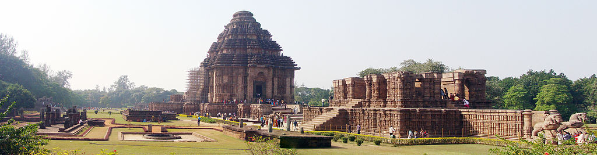
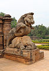
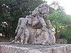
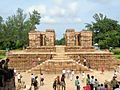
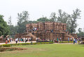
 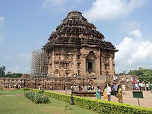
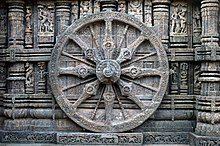
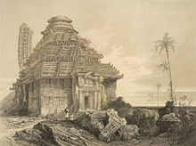
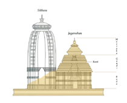
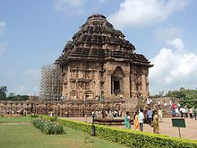
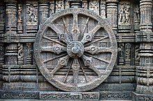
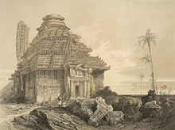
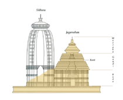
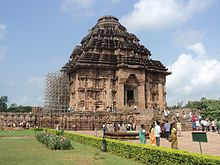
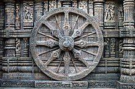
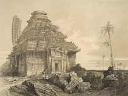
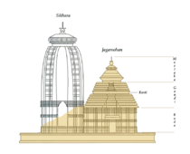
Developed By: Vineet Choudhary